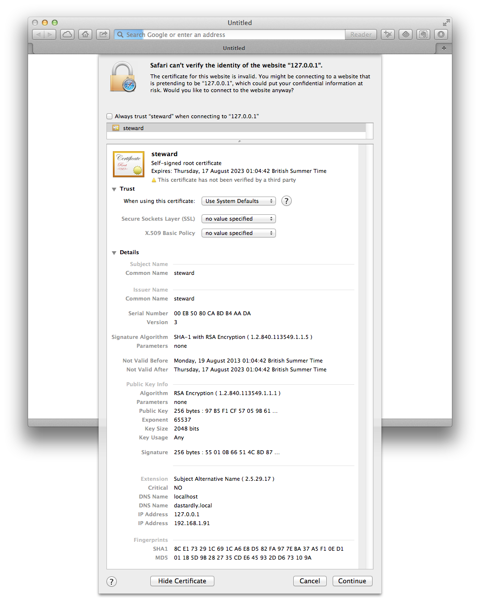

The Security Model
To speak plainly, there is a wide range of security properties with respect to the Internet of Things and home automation peripherals. Although there are some exceptions, the properties run the gamut from horrific to rather unfortunate.
Bearing that firmly in the front of your mind, here are the basics:
The steward runs on either a Mac or a Linux host. If we provided you with the machine, then it is hardened according to the box's specification; otherwise, hardening of the machine is outside of our scope.
You should allow only persons whom you trust to have physical access to the machine running the steward. Anyone who can physically access the machine is capable of defeating any security on it. This is true whether those persons wear black hats or diapers.
If you connect to the steward via the loopbox interface, you have full administrative privileges.
This is included as a failsafe feature. If you lose all access tokens — physical or virtual — you can still access the console applications via a browser running on the box.
You may be tempted to provide a tunnel to the loopback interface. If you feel you must do so, please make it an ssh tunnel that requires public-key (not password) authentication. However we don't believe that this is a good idea and we'd advise you not to implement such a tunnel.
If you connect to the steward via another interface, you must encrypt. The steward has a self-signed certificate that it used for authenticated traffic. However, once a client is registered with the steward, it downloads a privacy package containing keys specific to the steward/client pairing.
Perhaps the best suggestion for securing your network is to run all your things on a closed network attached to the steward's host, and have the steward run an additional interface for talking to the rest of your home network, i.e. get a Mac mini or Linux box with two Ethernet interfaces and a Wi-Fi interface.
In this scenario you would put all your wired things (e.g. Philips Hue lightbulbs) on the first Ethernet interface, put all your wireless things (e.g. the Netatmo weather station, Nest thermostat) on the Wi-Fi interface running with a hidden, randomly generated, 16-character SSID and a 16-character* WPA2 password. Then connect the second Ethernet interface to your home network, which is for your general purpose computing (e.g. your laptop, phones, tablets, and other devices). You will need to enable DHCP/NAT so that things like the Netatmo, Nest, etc., can upload and talk to their cloud back ends.
* 16 is the maximum password length supported by the Nest, in case you are wondering why we chose 16 characters as the maximum.
The Bootstrap
First, the client should be on a computer that's on the same network as the steward.
Whenever a client connects to the steward for the first time, the client warns that the certificate being used by the steward is untrusted. At this point, two actions must be undertaken:

look at the "details" of the certificate and record its "SHA1 fingerprint", which will look something like this:
9E DF 5F C4 17 E2 3E D3 88 E2 74 17 D6 93 91 8D 96 1D 9A E1click the checkbox that says something like :
Always trust 'steward' when connecting to ...
Compare the fingerprint reported by the client with the fingerprint in the file:
sandbox/startup.sha1
on the machine running the steward, e.g.
steward% cat sandbox/server.sha1
SHA1 Fingerprint=9E:DF:5F:C4:17:E2:3E:D3:88:E2:74:17:D6:93:91:8D:96:1D:9A:E1
If the two values match, then the client is talking directly to the steward; otherwise, there is another device on the network which is performing a man-in-the-middle attack. Find it and "fix" it as is appropriate.
Client (not user) Authentication
Clients authenticate to the steward, and the user associated with a client is authorized to invoke various API calls. There is a 1:N relationship between users and clients.
If no users are configured on the steward, then an unauthenticated API call from a device on the same network as the steward may be used to create the initial user and client.
Authentication: Time-based OTP (TOTP)
When a client is created, the steward responds with TOTP information allowing the client to authenticate itself. The methods used by the TOTP algorithm are based on RFC 6238, so programs such as Google Authenticator can be used for web-based access.
Privacy: HTTPS or SSH
After a client is created, it may upload an SSH public key fingerprint and retrieve a privacy package from the steward containing:
An SNI hostname; and,
A self-signed public-key certificate;
An ssh key fingerprint.
Note that at present, these steward ignores the SNI hostname and uses the same private keys for all clients. This will likely change in a future release.
HTTPS access
Whenever the client connects to the steward for API access:
The client uses the mDNS ("wss.tcp." ) to identify the IP address and port number of the steward.
The client establishes a TCP connection, starts TLS over that connection, and then HTTPS.
Once the HTTPS is negotiated, the client does an HTTP upgrade to WebSockets, and then authenticates itself.
SSH access
Note that at present, ssh is not implemented; please use https instead.
Whenever the client connects to the steward for ssh access:
The client uses the mDNS ("ssh.tcp." ) to identify the IP address and port number of the steward.
The client starts an ssh client using its ssh private key.
The client verifies that the fingerprint corresponding to the server matches the value provided in the privacy package, and then authenticates itself.
Authorization: Roles
A user has one of five roles:
master - for unlimited access to the steward;
resident - for extended access to the steward;
guest - for limited access to the steward;
device - for devices implementing the Simple Thing Protocol; or,
cloud - for services in the cloud
Security Roadmap
Security is everyone's problem. In the near future we intend to;
Get external verification and audits of both the code base and the protocol and network interface design that is implemented in it — "given enough eyeballs, all bugs are shallow."
In the same way your cable or ADSL modem provides a firewall for your, the steward can be used to provide a firewall for the Internet of Things. However to do so you need to your things to be on a separate network. We therefore will undertake development of a specification for, and software to support, implementing this — possibly along with reference hardware.